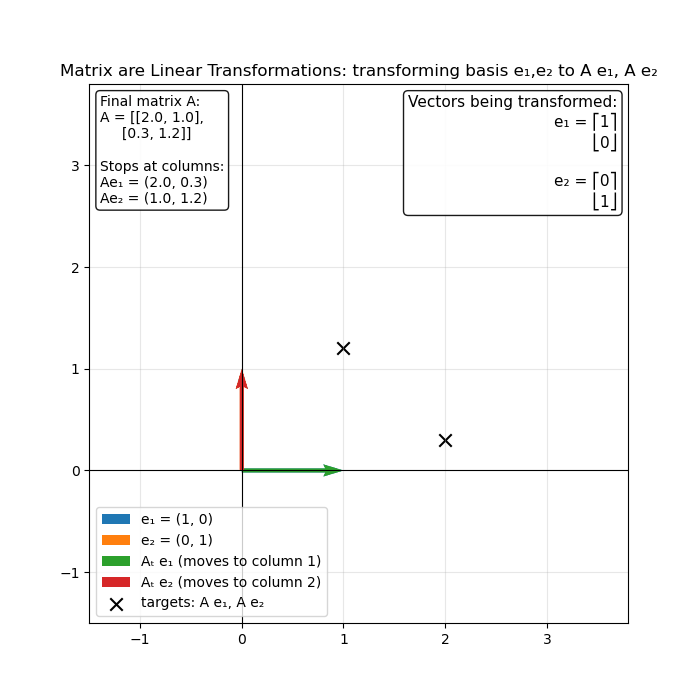
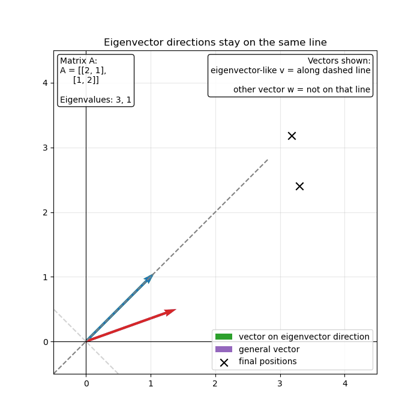
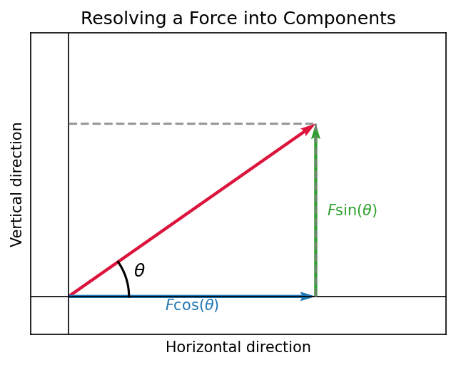
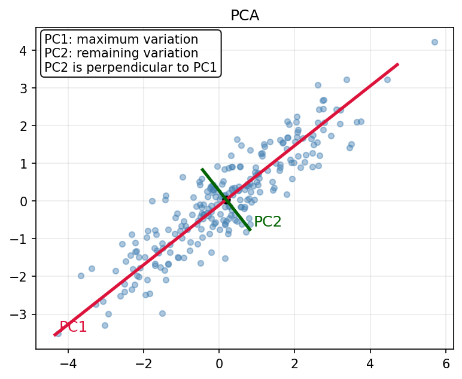
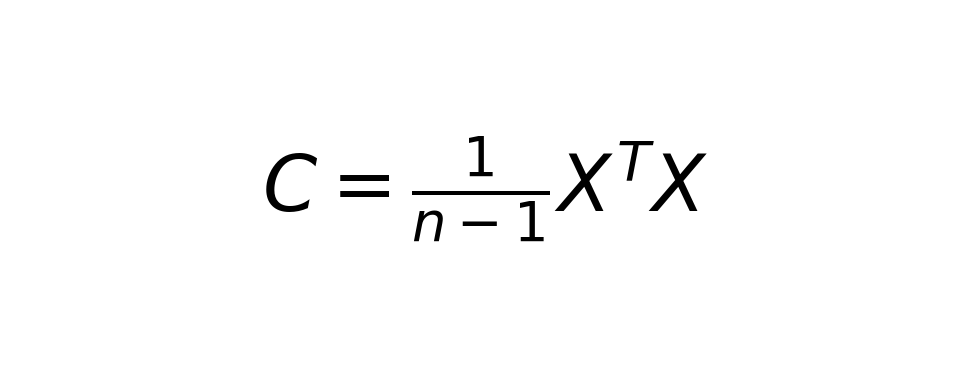

Eigenvectors, Eigendecomposition, and PCA: Building Intuition
Understanding PCA starts with understanding eigenvectors.
Most explanations of eigendecomposition begin with characteristic polynomials and determinants. This article takes a different approach. We shall focus on building the intuition by asking the right questions in a step-by-step manner.
Matrices as Transformations
A matrix can be viewed as a linear transformation that maps input vectors to output vectors while preserving vector addition and scalar multiplication. Geometrically, a transformation can:
- Rotate vectors
- Stretch vectors
- Compress vectors
- Shear vectors
- Reflect vectors
Imagine applying such a transformation to an entire collection of vectors. Most vectors will experience two simultaneous changes:
- A change in magnitude.
- A change in direction.

In a large dataset, we may have thousands or even millions of vectors, each living in a high-dimensional space. As the dimensionality of the space increases, the number of possible directions in which these vectors can change also increases. Therefore, understanding a transformation by tracking every vector individually quickly becomes unintuitive and difficult.
Looking for Structure
Imagine a square sheet of rubber. If we stretch and deform it, every point on the sheet moves differently. Trying to track the motion of every point would be overwhelming. Instead, we would naturally look for directions along which the deformation behaves predictably.
Matrices behave in a similar way. Although most vectors change both magnitude and direction under a transformation, some special directions behave differently. Along these directions, vectors are only stretched or compressed; they do not leave their original line.
These special directions are called eigenvector directions. Any vector lying along one of these directions is called an eigenvector.

Why Are Eigenvectors Useful?
Let us understand this using a simple example from our high school physics book.
Suppose a force acts on an object at an angle. Rather than analyzing the force as a single entity, we often decompose it into simpler components along the horizontal and vertical directions. Instead of working with one complicated force, we work with two simpler components whose effects can be analyzed independently.

The key idea behind the cited example is not the mathematics of force decomposition itself, but the objective behind it: complex patterns often become easier to understand when they are broken into simpler components acting along independent directions. Eigendecomposition follows a similar idea.
A matrix transformation may simultaneously rotate, stretch, compress, and shear vectors. When this is viewed in the standard coordinate system, all of these effects are mixed together, making the transformation difficult to interpret.
Therefore, instead of analyzing the transformation in the realm of its original coordinates, we search for special directions along which the transformation behaves as simply as possible. Along these directions, the transformation no longer mixes effects together. It acts only by stretching or compressing vectors.
This naturally leads to a deeper question:
Can we find a coordinate system built from these special directions so that the entire transformation becomes easier to understand?
To answer that question, we first need to understand the idea of a basis. In very naive terms: a mathematical basis is a set of directions used to describe every vector in a space. Any vector can be written as a unique combination of these basis directions. In this sense, a basis acts like a coordinate system: it does not change the vector itself, but it determines how we describe and interpret that vector.
So far, we have been describing vectors using the familiar coordinate axes. This choice is convenient, but it is arbitrary. If we choose a different basis, the vector itself remains unchanged and only its coordinates change. This raises an interesting possibility: could there be a basis in which a transformation becomes easier to understand?
Since eigenvectors identify the special directions along which a transformation acts only by stretching or compressing, one could ask whether these directions themselves can be used as basis vectors. The answer is yes. When a basis is formed from the eigenvectors of a transformation, we call it the eigenbasis.
From Eigendecomposition to Principal Component Analysis
Now that we understand the intuition behind eigendecomposition, let us see how the same idea can be used to understand data.
Imagine a dataset consisting of many samples and many features. Each sample can be viewed as a vector in a high-dimensional space. For example, in a biological dataset, each sample might represent a cell and each dimension might represent the expression level of a gene.
Although the data lives in a high-dimensional space, the information it contains is often concentrated along only a few important directions.
To understand this better, let us consider a dataset containing multiple features. At first, it may seem that each feature contributes unique information. However, many features are often correlated with one another. For example, consider a dataset containing measurements of height and arm span. Taller individuals generally tend to have larger arm spans. As a result, both features often convey similar information about the overall size of a person.
If two features vary together, storing both may introduce redundancy. Hence, we would like to represent the data using a smaller set of features that capture the essential information without repeatedly describing the same pattern.
This raises two important questions:
- Which directions in the data contain the most variation?
- Which directions provide new information rather than repeating information already captured by other directions?
Principal Component Analysis addresses both questions simultaneously. It searches for a new set of directions, called principal components, that:
- capture as much variation in the data as possible,
- remain independent, or uncorrelated, from one another,
- provide a compact, non-redundant representation of the data.
The first principal component captures the largest possible amount of variation in the dataset. The second principal component captures the largest remaining variation while remaining independent of the first. This process continues until all variation in the data has been accounted for.

Covariance as a Measure of Redundancy
To identify informative and non-redundant directions in the data, we first need a way to measure how features vary together. This is precisely the role of the covariance matrix.
Suppose our dataset is represented by a matrix \(X\), where each row corresponds to a sample and each column corresponds to a feature. The covariance matrix is given by the following formula:

The element \(C_{ij}\) of the covariance matrix quantifies the covariance between feature \(i\) and feature \(j\).
- Large positive values indicate that the features tend to increase together.
- Large negative values indicate that one feature tends to increase while the other decreases.
- Values close to zero indicate little linear relationship between the features.
The covariance matrix therefore summarizes the redundancy structure of the dataset. If many features are strongly correlated, the covariance matrix will contain large off-diagonal entries, indicating that information is being repeated across multiple dimensions.
If our goal is to discover a new set of directions that capture the most important variation while removing redundancy, then the covariance matrix appears to contain exactly the information we need.
The covariance matrix tells us how variation is distributed throughout the dataset and how different features vary together.
This naturally leads to the next question:
How can the covariance matrix itself reveal these important directions?
To answer this question, we turn to Principal Component Analysis using eigendecomposition.
Finding the Principal Components
To find these directions, we perform an eigendecomposition of the covariance matrix.
This is exactly where eigendecomposition enters the picture. We have already discussed that eigendecomposition searches for special directions along which a transformation behaves independently. The covariance matrix can also be viewed as a linear transformation acting on directions in feature space.
Performing an eigendecomposition of the covariance matrix gives
where
- \(Q\) is a matrix whose columns are the eigenvectors of the covariance matrix. The eigenvector with the largest eigenvalue points in the direction where the data has maximum variance. Subsequent eigenvectors capture the remaining variance while staying orthogonal to the previous directions.
- \(\Lambda\) is a diagonal matrix containing the corresponding eigenvalues.
The eigenvectors define a new basis for describing the data. Because the covariance matrix is symmetric, its eigenvectors are orthogonal to one another. Consequently, they provide independent, non-redundant directions in feature space.
The eigenvalues quantify how much variance exists along each of these directions:
- Large eigenvalues correspond to directions containing substantial variation.
- Small eigenvalues correspond to directions containing little variation.
This provides PCA a simple intuition:
- Compute the covariance matrix.
- Perform eigendecomposition.
- Sort the eigenvectors by decreasing eigenvalue, i.e. decompose the covariance matrix into eigenvectors and eigenvalues.
- Keep the eigenvectors associated with the largest eigenvalues.
- Project the data: express the original data in the principal subspace spanned by the top \(k\) eigenvectors of the covariance matrix.
- The retained eigenvectors are called the principal components. They form a lower-dimensional coordinate system that preserves as much variance as possible while removing the redundant directions.
If \(Q_k\) denotes the matrix containing only the top \(k\) eigenvectors, the data can be projected into a lower-dimensional space as
where
By projecting the data onto these principal directions, PCA preserves most of the variation in the dataset while removing redundant dimensions. Thus, the same eigenvectors that simplified a matrix transformation now reveal the fundamental structure of the data itself.